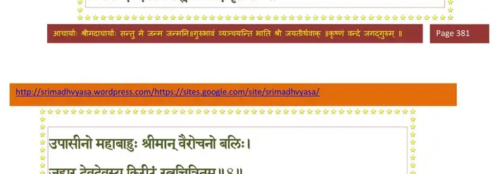
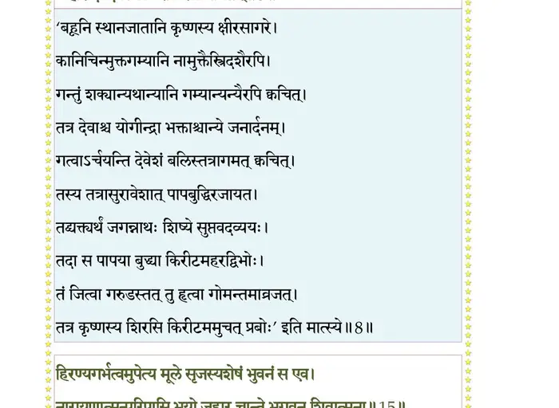
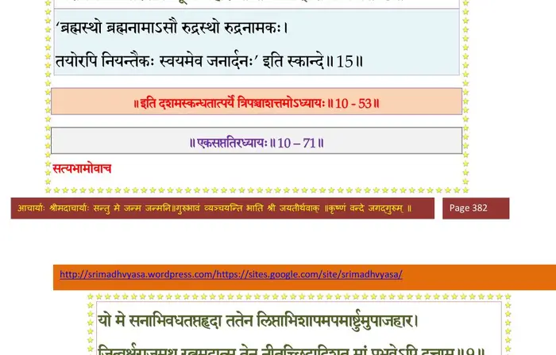

स्कन्ध 10 · अध्याय 53
श्लोक १
श्री शुक उवाच–
गोमन्तं पर्वतश्रेष्ठं तुङ्गद्रुमलतान्वितम् ।
सालतालतमालाढ्यं प्रियालाशोकशोभितम् ।। १ ।।
गोमन्तं पर्वतश्रेष्ठं तुङ्गद्रुमलतान्वितम् ।
सालतालतमालाढ्यं प्रियालाशोकशोभितम् ।। १ ।।
श्लोक २
कदम्बनीपहिन्तालपूगपुन्नागशोभितम् ।
आरुह्य कदलीषण्डमण्डितं मत्तकोकिलम् ।। २ ।।
आरुह्य कदलीषण्डमण्डितं मत्तकोकिलम् ।। २ ।।
श्लोक ३
भ्रमद्भ्रमरसङ्घातं प्लवगाकम्पितद्रुमम् ।
फलभारनतैः स्कन्धैर्नारिकेलैर्विराजितम् ।। ३ ।।
फलभारनतैः स्कन्धैर्नारिकेलैर्विराजितम् ।। ३ ।।
श्लोक ४
बहुप्रस्रवणोपेतं सुच्छायं निर्मलोदकम् ।
रम्यं ददृशतुर्वीरौ प्रदेशं रामकेशवौ ।। ४ ।।
रम्यं ददृशतुर्वीरौ प्रदेशं रामकेशवौ ।। ४ ।।
श्लोक ५
तत्र प्रवर्षणं नाम शृृङ्गं पर्वतमूर्धनि ।
अवापतुर्यत्र मेघा नित्यं वर्षन्त्यविक्लवाः ।। ५ ।।
अवापतुर्यत्र मेघा नित्यं वर्षन्त्यविक्लवाः ।। ५ ।।
श्लोक ६
तत्रारुह्य यदुश्रेष्ठौ पश्यन्तौ हि दिशो दश ।
रममाणौ यथाकाममूषतुः पर्वतोत्तमे ।। ६ ।।
रममाणौ यथाकाममूषतुः पर्वतोत्तमे ।। ६ ।।
श्लोक ७
एतस्मिन्नेव काले तु क्षीरोदे सागरोत्तमे ।
निवासे देवदेवस्य शङ्खचक्रगदाभृतः ।। ७ ।।
निवासे देवदेवस्य शङ्खचक्रगदाभृतः ।। ७ ।।
भागवततात्पर्यनिर्णय

श्लोक ८
उपासीनो महाबाहुः श्रीमान् वैरोचनो बलिः ।
जहार देवदेवस्य किरीटं रत्नचित्रितम् ।। ८ ।।
जहार देवदेवस्य किरीटं रत्नचित्रितम् ।। ८ ।।
भागवततात्पर्यनिर्णय

श्लोक ९
इन्द्रनीलसहस्राढ्यं गोमेदकशताचितम् ।
पद्मरागमहानीलमुक्ताफलविराजितम् ।। ९ ।।
पद्मरागमहानीलमुक्ताफलविराजितम् ।। ९ ।।
श्लोक १०
पुष्यरागप्रवालाढ्यं दिव्यकाञ्चननिर्मितम् ।
हृतं दानववीरेण विदित्वा पुरपालकः ।
तमन्वधावत् त्वरितं वैनतेयो विहङ्गराट् ।। १० ।।
हृतं दानववीरेण विदित्वा पुरपालकः ।
तमन्वधावत् त्वरितं वैनतेयो विहङ्गराट् ।। १० ।।
श्लोक ११
तमन्तरे समासाद्य दानवेन्द्रं दुरासदम् ।
कृत्वा युद्धं महाघोरं जित्वा दानवपुङ्गवम्।। ११ ।।
कृत्वा युद्धं महाघोरं जित्वा दानवपुङ्गवम्।। ११ ।।
श्लोक १२
गृहीत्वा रत्ननिचयं किरीटं भास्करोपमम् ।
आगच्छन् ददृशे देवं देवकीनन्दनं हरिम् ।। १२ ।।
आगच्छन् ददृशे देवं देवकीनन्दनं हरिम् ।। १२ ।।
श्लोक १३
वसन्तं साग्रजं रम्ये गोमन्ते पर्वतोत्तमे ।
तस्य मूर्धि्न निधायाशु किरीटं दिव्यभूषणम् ।
प्रणम्य पादयोर्मूर्ध्ना स्तोतुं तमुपचक्रमे ।। १३ ।।
तस्य मूर्धि्न निधायाशु किरीटं दिव्यभूषणम् ।
प्रणम्य पादयोर्मूर्ध्ना स्तोतुं तमुपचक्रमे ।। १३ ।।
श्लोक १४
नमो नमः कारणपूरुषाय नारायणायाखिलवल्लभाय ।
सुरारिसंहारणकारणाय नारायणायाखिलकर्मसाक्षिणे।। १४ ।।
सुरारिसंहारणकारणाय नारायणायाखिलकर्मसाक्षिणे।। १४ ।।
श्लोक १५
हिरण्यगर्भत्वमुपेत्य मूले सृजस्यशेषं भुवनं स एव ।
नारायणात्मन् परिपासि भूयो जहार चान्ते भगवन् शिवात्मन् ।। १५ ।।
नारायणात्मन् परिपासि भूयो जहार चान्ते भगवन् शिवात्मन् ।। १५ ।।
भागवततात्पर्यनिर्णय

श्लोक १६
तं त्वा यदोर्वंशकरं सुरेशं जानेऽवतीर्णं भुवने वृषाकपिम् ।
अहं हि भृत्यस्तव वैनतेयो ब्रूहि क्रियां किं करवाणि देव।। १६ ।।
अहं हि भृत्यस्तव वैनतेयो ब्रूहि क्रियां किं करवाणि देव।। १६ ।।
श्लोक १७
श्रीशुक उवाच–
इत्युक्त्वा देवदेवेशं प्रणिपत्य विहङ्गराट् ।
जानुनी(ना) धरणीं कृ(ग)त्वा तस्थौ प्राञ्जलिरग्रतः।।१७।।
इत्युक्त्वा देवदेवेशं प्रणिपत्य विहङ्गराट् ।
जानुनी(ना) धरणीं कृ(ग)त्वा तस्थौ प्राञ्जलिरग्रतः।।१७।।
श्लोक १८
तं दृष्ट्वा यादवश्रेष्ठो गरुडं पक्षिपुङ्गवम् ।
प्रीत्युत्फुल्लमुखो दोर्भ्यां पस्पर्शाङ्गं तदुत्तमम् ।। १८ ।।
प्रीत्युत्फुल्लमुखो दोर्भ्यां पस्पर्शाङ्गं तदुत्तमम् ।। १८ ।।
श्लोक १९
गच्छ भद्र यथाकाममेहि काले मया स्मृतः ।
इत्युक्त्वा तं विसृज्योभावीश्वरौ रामकेशवौ ।। १९ ।।
इत्युक्त्वा तं विसृज्योभावीश्वरौ रामकेशवौ ।। १९ ।।
श्लोक २०
फलमूलकृताहारौ पीतकौशेयवाससौ ।
अवरुह्य गिरेः शृृङ्गात् करवीरपुरं गतौ ।। २० ।।
अवरुह्य गिरेः शृृङ्गात् करवीरपुरं गतौ ।। २० ।।
श्लोक २१
तत्र तौ चतुरो मासानुषित्वा भरतर्षभ ।
महत्या सेनया सार्धं जग्मतुर्मधुरां पुरीम् ।। २१ ।।
महत्या सेनया सार्धं जग्मतुर्मधुरां पुरीम् ।। २१ ।।
श्लोक २२
शृृगालं निहतं श्रुत्वा मागधः क्रोधविह्वलः ।
आजगाम कुुरुश्रेष्ठ महत्या सेनया वृतः ।। २२ ।।
आजगाम कुुरुश्रेष्ठ महत्या सेनया वृतः ।। २२ ।।
श्लोक २३
तेन सार्धमभूद् युद्धं सप्ताहं रामकृष्णयोः ।
तदा पराजितो युद्धे मागधो बहुसैनिकः ।। २३ ।।
तदा पराजितो युद्धे मागधो बहुसैनिकः ।। २३ ।।
श्लोक २४
जगाम मागधानेव बहुभिः क्षत्रियैः सह ।
रामकृष्णौ च धर्मज्ञौ सूतमागधवन्दिभिः ।। २४ ।।
रामकृष्णौ च धर्मज्ञौ सूतमागधवन्दिभिः ।। २४ ।।
श्लोक २५
स्तूयमानौ विविशतुः सानुगौ मधुरां पुरीम् ।
एवं सप्तदशकृत्वस्तावदक्षौहिणीबलः ।। २५ ।।
एवं सप्तदशकृत्वस्तावदक्षौहिणीबलः ।। २५ ।।
श्लोक २६
युयुधे मागधो राजा यदुभिः कृष्णपालितैः ।
अक्षिण्वत बलं सर्वं वृष्णिभिः कृष्णतेजसा ।। २६ ।।
अक्षिण्वत बलं सर्वं वृष्णिभिः कृष्णतेजसा ।। २६ ।।
श्लोक २७
हतेषु तेष्वनीकेषु त्यक्तोऽयादरिभिर्नृप ।
अष्टादशमसङ्ग्रामे आगामिनि तदन्तरा ।। २७ ।।
अष्टादशमसङ्ग्रामे आगामिनि तदन्तरा ।। २७ ।।
श्लोक २८
नारदप्रेषितो वीरो यवनः प्रत्यदृश्यत ।
रुरोध मधुरामेत्य तिसृभिर्म्लेच्छकोटिभिः ।। २८ ।।
रुरोध मधुरामेत्य तिसृभिर्म्लेच्छकोटिभिः ।। २८ ।।
श्लोक २९
नृलोके चाप्रतिद्वन्द्वो वृष्णीन् श्रुत्वाऽऽत्मसम्मितान् ।
तं दृष्ट्वाऽचिन्तयत् कृष्णः सङ्कर्षणसहायवान् ।। २९ ।।
तं दृष्ट्वाऽचिन्तयत् कृष्णः सङ्कर्षणसहायवान् ।। २९ ।।
श्लोक ३०
अहो यदूनां वृजिनं प्राप्तं ह्युभयतो महत् ।
यवनोऽयं रुणद्ध्यस्मानद्य श्वो वा महाबलः ।। ३० ।।
यवनोऽयं रुणद्ध्यस्मानद्य श्वो वा महाबलः ।। ३० ।।
श्लोक ३१
मागधोऽभ्येति दुष्टात्मा परश्वो नैव संशयः ।
आवयोर्युद्ध्यतोरस्य यद्यागच्छेज्जरासुतः ।। ३१ ।।
आवयोर्युद्ध्यतोरस्य यद्यागच्छेज्जरासुतः ।। ३१ ।।
श्लोक ३२
बन्धून् वधिष्यत्यथवा नेष्यते स्वपुरीं बली ।
तस्मादद्य विधास्यामो दुर्गं द्विपददुर्गमम् ।। ३२ ।।
तस्मादद्य विधास्यामो दुर्गं द्विपददुर्गमम् ।। ३२ ।।
श्लोक ३३
तत्र ज्ञातीन्समाधाय यवनं घातयामहे ।
इति सम्मन्त्र्य भगवान् दुर्गं द्वादशयोजनम् ।। ३३ ।।
इति सम्मन्त्र्य भगवान् दुर्गं द्वादशयोजनम् ।। ३३ ।।
श्लोक ३४
अन्तः समुद्रे नगरं कृष्णोऽद्भुतमचीकरत् ।
दृश्यते यत्र हि त्वाष्ट्रं विज्ञानं शिल्पनैपुणम् ।। ३४ ।।
दृश्यते यत्र हि त्वाष्ट्रं विज्ञानं शिल्पनैपुणम् ।। ३४ ।।
श्लोक ३५
रथ्याचत्वरवीथीभिर्यथाव(बा)स्तु विनिर्मितम् ।
सुरद्रुमलतोद्यानविचित्रोपवनान्वितम् ।। ३५ ।।
सुरद्रुमलतोद्यानविचित्रोपवनान्वितम् ।। ३५ ।।
श्लोक ३६
हेमशृृङ्गैर्दिवस्पृग्भिः स्फाटिकाट्टालगोपुरैः ।
राजतारपुटैः कोष्ठैर्जुष्टं हेमस्वलङ्कृतैः ।। ३६ ।।
राजतारपुटैः कोष्ठैर्जुष्टं हेमस्वलङ्कृतैः ।। ३६ ।।
श्लोक ३७
रत्नकूटैर्गृहैर्हेमैर्महामरतकस्थलैः ।
वास्तोष्पतीनां च गृहैर्वलभीभिश्च निर्मितम्।। ३७ ।।
वास्तोष्पतीनां च गृहैर्वलभीभिश्च निर्मितम्।। ३७ ।।
श्लोक ३८
चातुर्वर्ण्यजनाकीर्णं यदूनां च गृहैर्लसत् ।
सुधर्मां पारिजातं च महेन्द्रः प्राहिणोद्धरेः ।। ३८ ।।
सुधर्मां पारिजातं च महेन्द्रः प्राहिणोद्धरेः ।। ३८ ।।
श्लोक ३९
यत्र चावस्थितो मर्त्यो मर्त्यधर्मैर्वियुज्यते ।
यत् प्रियं देवदेवस्य विष्णोः क्षीरोदवासिनः ।। ३९ ।।
यत् प्रियं देवदेवस्य विष्णोः क्षीरोदवासिनः ।। ३९ ।।
श्लोक ४०
श्यामैककर्णान् वरुणो हयान् शुक्लान् मनोजवान् ।
ददौ सहस्रसङ्ख्यातान् देवदेवाय तोयराट् ।। ४० ।।
ददौ सहस्रसङ्ख्यातान् देवदेवाय तोयराट् ।। ४० ।।
श्लोक ४१
अष्टौ निधिपतिः कोशान् रत्नपूर्णानविक्षयान् ।
तथाऽन्ये लोकपालाश्च ददुः स्वाधिकृतं धनम् ।। ४१ ।।
तथाऽन्ये लोकपालाश्च ददुः स्वाधिकृतं धनम् ।। ४१ ।।
श्लोक ४२
यद् यद् भगवता दत्तमाधिपत्यं स्वसिद्धये ।
सर्वं प्रत्यर्पयामासुर्हरौ भूमिगते नृप ।। ४२ ।।
सर्वं प्रत्यर्पयामासुर्हरौ भूमिगते नृप ।। ४२ ।।
श्लोक ४३
तत्र योगप्रभावेण नीत्वा स्वान् भगवान् हरिः ।
मधुरायाश्च रामेण कृष्णः समनुमन्त्रितः ।
निर्जगाम पुरद्वारात् पद्ममाली निरायुधः।। ४३ ।।
मधुरायाश्च रामेण कृष्णः समनुमन्त्रितः ।
निर्जगाम पुरद्वारात् पद्ममाली निरायुधः।। ४३ ।।
।। इति श्रीमद्भागवते दशमस्कन्ध उत्तरार्धे त्रिपञ्चाशोऽध्यायः ।।